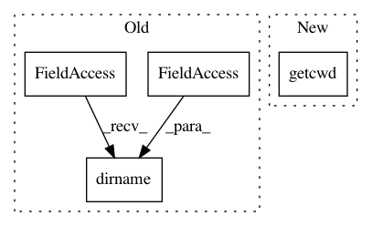

0a77d485e48320b6ae4567f810a0eba041c04c28,test/cli/test_base_interface.py,Base_interfaceTest,setUp,#Base_interfaceTest#,19
Before Change
}
try:
path = os.path.join(os.path.dirname(__file__), ".auto-sklearn")
os.makedirs(path)
except Exception:
pass
After Change
}
try:
path = os.path.join(os.getcwd(), ".auto-sklearn", "datamanager.pkl")
os.remove(path)
except Exception:
pass
In pattern: SUPERPATTERN
Frequency: 7
Non-data size: 4
Instances
Project Name: automl/auto-sklearn
Commit Name: 0a77d485e48320b6ae4567f810a0eba041c04c28
Time: 2015-11-17
Author: feurerm@informatik.uni-freiburg.de
File Name: test/cli/test_base_interface.py
Class Name: Base_interfaceTest
Method Name: setUp
Project Name: automl/auto-sklearn
Commit Name: 0a77d485e48320b6ae4567f810a0eba041c04c28
Time: 2015-11-17
Author: feurerm@informatik.uni-freiburg.de
File Name: test/cli/test_SMAC_interface.py
Class Name: SMAC_interfaceTest
Method Name: tearDown
Project Name: lovit/soynlp
Commit Name: 566cf8ec85574a8396c7a153e7e5b2ce0a606aa7
Time: 2017-05-18
Author: soy.lovit@gmail.com
File Name: soynlp/noun.py
Class Name: LRNounExtractor
Method Name: __init__
Project Name: markovmodel/PyEMMA
Commit Name: bb49ea29f6d6f90496b21d5ce5788aa3c1e7ed7b
Time: 2017-03-02
Author: marscher@users.noreply.github.com
File Name: devtools/conda-recipe/run_test.py
Class Name:
Method Name:
Project Name: mne-tools/mne-python
Commit Name: 27e0108b3a3d92973ceb92b339e18956499032f7
Time: 2019-08-23
Author: dan.mccloy@gmail.com
File Name: mne/report.py
Class Name: Report
Method Name: save
Project Name: automl/auto-sklearn
Commit Name: 0a77d485e48320b6ae4567f810a0eba041c04c28
Time: 2015-11-17
Author: feurerm@informatik.uni-freiburg.de
File Name: test/cli/test_HPOlib_interface.py
Class Name: HPOlib_interfaceTest
Method Name: tearDown
Project Name: automl/auto-sklearn
Commit Name: 0a77d485e48320b6ae4567f810a0eba041c04c28
Time: 2015-11-17
Author: feurerm@informatik.uni-freiburg.de
File Name: test/cli/test_base_interface.py
Class Name: Base_interfaceTest
Method Name: tearDown